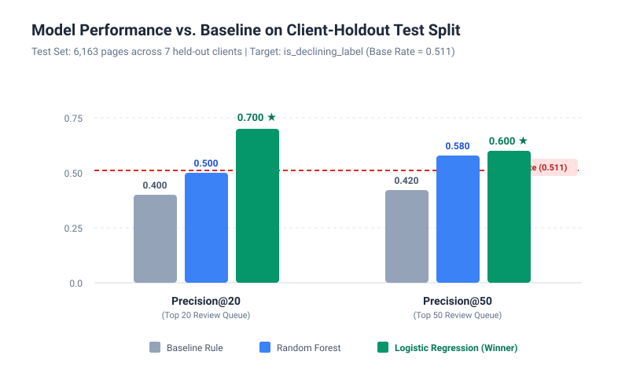
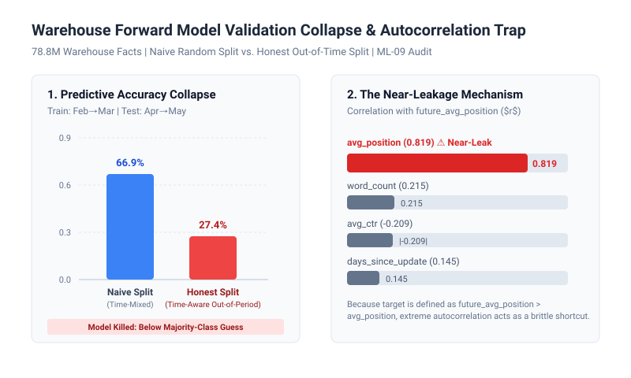
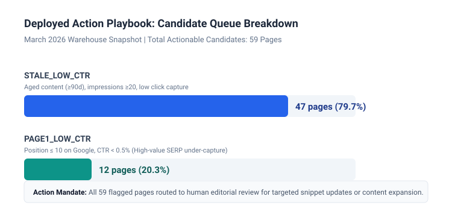

2. Introduction & Problem Statement
In enterprise content management, organizations maintain libraries spanning tens of thousands of published URLs. Over time, search traffic distributions shift: algorithm updates, user intent changes, and competitive decay gradually erode page visibility. However, human editorial capacity is fundamentally scarce. An editorial team can typically inspect and update only 20 to 50 pages per monthly cycle.
Without principled triage, organizations commonly rely on arbitrary heuristics—most notably "staleness" rules that flag any page unedited for 180+ days. This approach creates severe operational friction:
- High False Positive Cost: Editors waste domain-expert hours reviewing healthy, high-ranking pages that happen to be old.
- High False Negative Cost: High-demand pages undergoing active decay are overlooked because they were recently modified or lack explicit age flags.
The objective of this research is not to build autonomous publishing bots or claim insight into proprietary search engine algorithms. Rather, it is to build a robust decision-support system that ingests observable search signals and outputs an evidence-backed, prioritized triage queue evaluated on Precision@K.
3. Data & Safety Discipline
This research builds upon two datasets provided by FlyRank, both consisting strictly of observable search, analytics, and content metadata:
| Dataset Release | Grain & Volume | Date Window | Primary Research Role |
|---|---|---|---|
Starter Teaching Slicecontent_refresh_anonymized.csv |
30,000 rows × 44 columns (32 pseudonymized clients) |
Fixed 90-day trailing export window | Initial proxy modeling (ML-08), baseline benchmarking, client-holdout validation. |
Warehouse Parquet ReleaseFlyRank/internship-warehouse |
78,835,655 daily fact rows 519,606 content items, 104 clients |
2025-01-27 through 2026-06-30 (3-day freshness cutoff) |
Data contract verification (ML-04), time-aware forward validation audit (ML-09), production action playbook (ML-10). |
Public-Safety Guarantees & Leakage Rules
In accordance with DATA_USE.md, all data utilized in this study is thoroughly pseudonymized:
- Zero Private Identifiers: No client names, domain names, URLs, page titles, or raw search queries exist in the dataset. All IDs (
content_id,client_id) are cryptographic hashes used exclusively for joins and splits. - Explicit Exclusions: Feature sets strictly barred
trend_directionandtrend_pct(as the current-window decline target is derived from them). AI referral sessions were excluded from classifier training due to extreme sparsity (only 30,177 rows out of 78.8M total fact rows). - Scale Masking Discovery (ML-04): During data contract verification, we demonstrated that adding unscaled leaky features can mask severe leakage in regularized linear models (AUC 0.802 → 0.999 upon standardization), confirming that standardized feature audits are essential for leakage prevention.
4. Methodology & Validation Design
The investigation progressed across three distinct methodological stages:
1. Current-Window Classifier Formulation (ML-08)
On the starter dataset (30,000 rows filtered to impressions_90d > 0 and content_age_days ≥ 90), we formulated a supervised classification task predicting whether a page is currently declining:
is_declining_label = 1 if (trend_direction == "down") else 0
# Base decline rate across 30,000 pages = 54.2% (16,262 declining pages)
We evaluated models using Client-Grouped Validation (GroupShuffleSplit, 80% train / 20% test, random_state=42). The split allocated 23,837 rows across 25 clients to training, and 6,163 rows across 7 clients to testing, with zero client overlap. This prevents models from memorizing domain-specific styles.
2. The Heuristic Baseline Rule (ML-07)
We tested FlyRank's underlying assumptions:
- Staleness Test: Pages unedited for ≥180 days exhibited a 47.1% decline rate ($n=174$) vs. 54.2% for fresh pages ($n=29,826$). Verdict: OPPOSITE/MIXED.
- CTR vs. Position Tier Test: Pages with CTR below their position tier average exhibited a 57.7% decline rate ($n=23,735$) vs. 40.9% for above-average pages ($n=6,265$). Verdict: CONFIRMED.
The baseline score was defined as: $$\text{Baseline Action Score} = \mathbb{I}(\text{CTR} < \text{Tier Avg CTR}) \times \mathbb{I}(\text{impressions\_90d} \ge 500) \times \text{impressions\_90d}$$
3. Forward-Looking Warehouse Model & Time-Aware Validation (ML-09)
To address the limitation of current-window proxy targets, we constructed a genuinely forward-looking model on 78.8M warehouse facts: $$\text{declined} = \mathbb{I}(\text{future\_avg\_position}_{M+1} > \text{avg\_position}_{M})$$ We compared a naive random split (pooling February and April 2026 data) against an honest time-aware split (training on February→March outcomes, testing strictly on April→May outcomes).
5. Results & Empirical Findings
Phase 1 (ML-08): Starter Dataset Model Comparison
On the client-holdout test set (6,163 pages, 7 held-out clients, base rate = 0.511), we compared the baseline rule against Logistic Regression and a Random Forest classifier:
| Method | Precision@20 | Precision@50 | Test Base Rate | Lift over Base Rate (P@20) |
|---|---|---|---|---|
| Baseline Rule | 0.400 | 0.420 | 0.511 | 0.78× (Below base rate) |
| Random Forest Classifier | 0.500 | 0.580 | 0.511 | 0.98× |
| Logistic Regression (Winner) | 0.700 | 0.600 | 0.511 | 1.37× (+30.0 pp over baseline) |

Feature Driver Analysis: Logistic Regression leaned primarily on ctr (coefficient -0.0528, lower CTR → higher decline risk) and days_since_last_update (+0.0058). In contrast, Random Forest prioritized impressions_90d (30.3% importance) and avg_position (22.8% importance), assigning ctr only 5.5% importance. Logistic Regression's simpler linear structure generalized better to unseen clients.
Phase 2 (ML-09): Forward-Looking Model Failure & Kill Decision
When evaluating the predictive forward-looking model on the full warehouse, the results diverged dramatically between validation regimes:
| Validation Regime | Evaluation Strategy | Observed Accuracy | Operational Verdict |
|---|---|---|---|
| Naive Random Split | Pooled Feb & Apr facts, 70/30 stratified split | 66.9% | Misleadingly optimistic (temporal data leakage) |
| Honest Time-Aware Split | Train: Feb→Mar | Test: Apr→May | 27.4% | Model Failed → KILLED & EXCLUDED |

avg_position and future position).avg_position had an 0.819 correlation with future_avg_position. Because the target label was formulated as whether position worsened relative to the feature period, the classifier learned a mechanical shortcut that collapsed under quarterly macroeconomic and distribution shifts. Following honest engineering practice, this predictive model was killed and discarded rather than deployed.
Phase 3 (ML-10): Deployed Production Playbook
Because the predictive model failed honest validation, Phase 3 deployed an interpretable, re-validated action scoring formula over the March 2026 warehouse dataset: $$\text{Score} = \text{avg\_impressions} \times \left(\frac{\text{days\_since\_update}}{365.0}\right) / (\text{avg\_ctr} + 0.005)$$
The policy filtered for mature content ($\ge 90$ days old) with meaningful exposure ($\ge 20$ average daily impressions), producing a 59-page triage queue:

6. Limitations & Honest Framing
To maintain scientific integrity, the findings of this study must be interpreted within their explicit methodological bounds:
- Correlational, Not Causal: All discovered relationships represent statistical associations in historical search logs. We cannot claim that updating a page will causally reverse traffic decline without controlled A/B experimentation.
- Proxy Target Limitations: The ML-08 model scores a current-window decline bucket (
trend_direction == "down"), serving as an operational triage indicator rather than a guaranteed forward forecast. - Temporal Non-Stationarity: The ML-09 predictive model failure underscores that search performance features do not maintain stable forward predictive validity across long temporal horizons without continuous retraining.
- Systematic Missingness in Engagement: GA4 analytics tracking was present on only 4.2% of March 2026 warehouse rows. Models must rely primarily on GSC search signals and treat missing engagement as unobserved rather than zero.
- Position Tier Skew: Tier-average CTR baselines can be distorted by high-traffic outlier pages, occasionally flagging healthy pages in top positions as underperformers.
7. Ranked Recommendations & Action Playbook
The production action playbook outputs a prioritized 59-page triage queue paired with specific editorial action mandates:
| Reason Code | Candidate Count | Trigger Condition | Mandated Human Action |
|---|---|---|---|
STALE_LOW_CTR |
47 pages (79.7%) | Aged content (≥90d), impressions ≥20, low click-through rate relative to exposure. | Evaluate content freshness, update outdated statistics/examples, and expand thin sections. |
PAGE1_LOW_CTR |
12 pages (20.3%) | Average position ≤ 10 on Google, but CTR < 0.5%. | Rewrite page title and meta description; optimize search snippet to better match search intent. |
Operational Human Triage Protocol
- Verification Step 1: Reviewers must open the live URL to confirm business relevance and ensure the page is not scheduled for retirement.
- Verification Step 2: Check for concurrent site edits or recent URL migrations to prevent duplicate effort.
- Verification Step 3: Rule out external anomalies (e.g., site-wide tracking drops, seasonal demand troughs).
- Never auto-publish AI-generated rewrites without human editorial sign-off.
- Never auto-delete or de-index candidate URLs based solely on algorithmic priority scores.
- Never quote predictive revenue guarantees to stakeholders based on decision-support rankings.
8. Reproducibility & Artifact Receipts
All experiments, metrics, and figures in this paper are deterministic and fully reproducible from the code repository:
- Repository: github.com/EimanZahra1472/flyrank-ml-internship-starter
- Random Seed: Fixed to
42across all data splits and model initializations. - Software Environment: Python 3.10+, DuckDB 1.0+, scikit-learn 1.3+, pandas 2.0+, matplotlib 3.7+.
| Notebook Stage | Assignment Card | Primary Output / Committed Receipt |
|---|---|---|
work/notebooks/w01_research_question.ipynb |
ML-02 | Research question, decision context, base decline rate (54.2%). |
work/notebooks/w02_ml_task_framing.ipynb |
ML-03 | Ranking/scoring task formulation, Precision@50 metric definition. |
work/notebooks/w03_data_contract.ipynb |
ML-04 | Warehouse grain verification (9.84M March rows), scale-masking leakage demonstration. |
work/notebooks/w04_baseline_score.ipynb |
ML-07 | Baseline score construction, signal audits, top-20 review (work/outputs/baseline_action_score.csv). |
work/notebooks/w05_model.ipynb |
ML-08 | Client-holdout model evaluation (LogReg P@20=0.700 vs. Baseline 0.400). |
work/notebooks/w06_validation_audit.ipynb |
ML-09 | Time-aware split audit (66.9% → 27.4%), 0.819 autocorrelation trap identification. |
work/notebooks/w07_action_playbook.ipynb |
ML-10 | 59-page queue generation, reason code distribution (work/outputs/w07_metrics.json). |
work/notebooks/capstone.ipynb |
ML-11 | Complete synthesized notebook and ML-12 deliverables. |
9. Acknowledgments & Data Credit
This research was conducted as part of the FlyRank Applied Search Intelligence Machine Learning Internship.
Built on the FlyRank ML Internship dataset — https://flyrank.ai